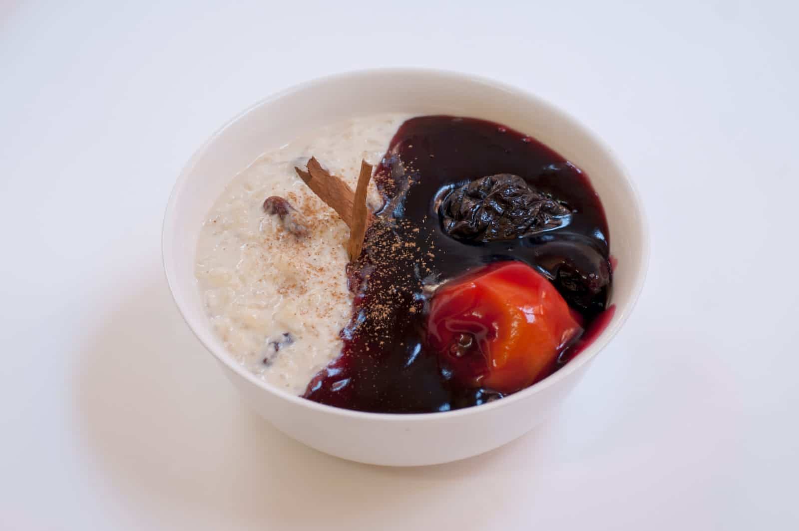

Trozos en dados de pulpo cocidos bañados en leche de tigre.
LOMO SALTADO
Solomillo al wok con cebolla, tomate, salsa de soja, patatas fritas y guarnición de arroz
blanco.
JALEA DE MARISCOS
Pescados y mariscos rebozados con yuca, chifle, choclo y zarza criolla
CALDO DE GALLINA
Caldo de gallina, con presa, mezclada con huevo, papa, tallarín, y fideos.
POLLO A LA BRASA
Pollo marinado con especies y cocido a las brasas en un horno especial denominado retombo
que lo gira sobre su propio eje.
CALDO DE GALLINA
Caldo de gallina, con presa, mezclada con huevo, papa, tallarín, y fideos.
PARIHUELA DE MARISCOS
Concentrado de mariscos en salsa madre de langostinos y va
acompañado de anillos de calamar, langostinos, tacos de pescado, cangrejo,
pulpo,
mejillones, cebollín y cilantro al gusto.
SOPA WANTÁN
La sopa wantán está hecha a base de caldo de pollo, lleva col china y fideos
chinos
con cuatro wantanes rellenos de pollo cocido con un toque de soja.
CHUPE DE LANGOSTINOS
Es una sopa contundente que lleva como ingredientes principales los langostinos,
papa
amarilla, leche, choclo, arroz y huevo, además de un aderezo de salsa madre.
AEROPUERTO
platillo a base de arroz salteado, tallarín, jengibre, pollo y verduras chinas,
soja, huevo frito, salsa agridulce y especias.
PECHUGA DE POLLO
Con un toque de aceite de oliva, guarnición de arroz blanco, patatas fritas o
cocidas
y ensalada del día.
SECO DE TERNERA CON FRIJOLES
Guiso al cilantro con chicha de jora, ternera más frejoles.
JALEA DE MARISCOS
Pescados y mariscos rebozados con yuca, chifle, choclo y zarza criolla
MAZAMORRA MORADA

PYE DE LIMÓN
PYE DE MANZANA
TARTA DE CHOCOLATE
TRES LECHES
CEVICHE EN CREMA DE ROCOTO
Pescado bañado en leche de tigre con alto picante peruano.
PESCADO, CALAMAR, LANGOSTINO
Pescado, langostinos y calamares bañado en leche de tigre.
CEVICHE DE PULPO
Trozos en dados de pulpo cocidos bañados en leche de tigre.
CEVICHE TRADICIONAL
Pescado bañado en leche de tigre con salsa de aji amarillo.